Slide 12 หน้า 1–30 — Frequency domain และ Facebook Prophet
บทสุดท้ายมีสองเรื่องที่ใช้ความคิดเดียวกัน คืออนุกรมเวลาเขียนเป็นผลรวมของคลื่นได้ เรื่องแรกใช้คลื่นเพื่อค้นหาว่ามีรอบกี่วัน (periodogram) เรื่องที่สองใช้คลื่นเพื่อสร้าง seasonal ใน Prophet ข้อสอบเก่าเคยมี periodogram อยู่บ้าง1 และอาจารย์แนะนำให้ทำข้อสอบเก่าจากปีล่าสุดย้อนลงไป2 บทนี้ปิดด้วยตารางเลือกโมเดลของทั้งวิชา
| คำถาม | เครื่องมือ | ผลที่ได้ | ตอน |
|---|---|---|---|
| ข้อมูลมีรอบกี่หน่วยเวลา | periodogram spectrum() | ความถี่เด่น f แล้ว T = 1/f | 1–2 |
| รู้รอบแล้ว จะพยากรณ์อย่างไร | SARIMA ที่ s = T | ค่าพยากรณ์ | 2 |
| ข้อมูลรายวัน มีวันหยุดเลื่อนได้ และตัวแปรภายนอก | Prophet | ค่าพยากรณ์ + ผลของวันหยุดและ regressor | 3–4 |
| โจทย์แบบนี้ใช้โมเดลไหน | ตารางสรุปทั้งวิชา | SARIMA / ARIMAX / VAR / GARCH / Prophet | 5 |
เพลงหนึ่งเพลงดูได้สองแบบ แบบแรกคือเส้นคลื่นเสียงที่ขึ้นลงตามเวลา แบบที่สองคือแถบ equalizer ที่บอกว่าเสียงเบสกับเสียงแหลมดังแค่ไหน ทั้งสองแบบเป็นเพลงเดียวกัน แต่แบบที่สองบอกได้ทันทีว่ามีโน้ตอะไรซ้ำอยู่
ทุกบทก่อนหน้าอยู่ใน time domain ทั้ง univariate และ multivariate3 frequency domain แสดงข้อมูลชุดเดิมในรูปของส่วนประกอบตามความถี่ บอกว่าแต่ละความถี่ (รูปแบบ) มีอยู่มากแค่ไหน และ ได้มาจาก Fourier transform
| Time domain | Frequency domain | |
|---|---|---|
| แสดงอะไร | ค่าตามเวลา | พลังงานตามความถี่ |
| วิธี | SARIMA / ETS | Periodogram |
| เป้าหมาย | พยากรณ์โดยใช้คาบที่รู้แล้ว | ค้นหาคาบที่ซ่อนอยู่ |
| เห็นชัด | การเปลี่ยนแปลงฉับพลัน | รอบที่ซ้ำหรือ noise |
| สรุปบทบาท | modeling: จะพยากรณ์ด้วยรอบเหล่านั้นอย่างไร | discovery: มีรอบอะไรอยู่บ้าง |
สองมุมมอง มีข้อมูลเท่ากัน แค่มองคนละมุม และ ใช้ร่วมกันจึงเข้าใจโครงสร้างของอนุกรมได้ครบ4 ตัวอย่างบนสไลด์คือร้านค้าที่ยอดขายรายวันมียอดพุ่งแบบสุ่ม time domain เห็นยอดพุ่งช่วงวันหยุด ส่วน frequency domain เผยรอบ 7 วันที่แรง (ฤดูกาลรายสัปดาห์)
สไลด์หน้า 5 บอกว่า ในทางคณิตศาสตร์ ทั้ง cycle และ seasonality คือรูปแบบที่เป็นคาบ frequency domain จึงจับได้ทั้งสองอย่าง ต่างจาก Lesson 3–4 ที่แยก cycle (ยาวไม่คงที่) ออกจาก seasonal (ยาวคงที่) แต่ trend ไม่ใช่คาบ ต้อง difference ก่อน (ตอน 2.1)
ความถี่ บอกว่าใน 1 หน่วยเวลามีกี่รอบ ไม่จำเป็นต้องเป็นจำนวนเต็ม คาบ T คือความยาวของหนึ่งรอบ5 สองค่านี้เป็นส่วนกลับของกัน
ข้อมูลรายวันได้ความถี่ 0.1429 หมายถึงหนึ่งวันมี 0.1429 รอบ ยังไม่ครบรอบ6 T = 1/0.1429 = 7 วัน คือรอบรายสัปดาห์ ข้อมูลรายเดือนได้ 0.0833 จะได้ T = 12 เดือน
Amplitude คือความสูงหรือความแรงของการแกว่ง ว่าห่างจากระดับเฉลี่ยแค่ไหน ใน frequency domain amplitude บอกว่าส่วนประกอบแต่ละความถี่แรงแค่ไหน
ตัวอย่างนี้มีไว้ให้เห็นว่า คลื่นที่ซ้อนกันจนดูยุ่งใน time domain แยกเป็นแท่งชัด ๆ ใน frequency domain และยังแยกได้แม้มี noise
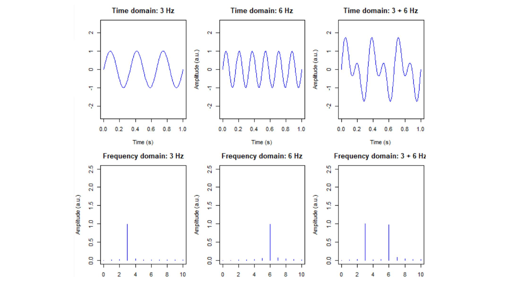
คลื่น 3 Hz (3 รอบต่อวินาที) กับ 6 Hz รวมกันแล้วรูปใน time domain ไม่เหมือนคลื่นไหนเลย แต่ใน frequency domain เหลือแท่งสองแท่งที่ 3 และ 6 พอดี ความสูงของแต่ละแท่งคือ amplitude ของคลื่นนั้น
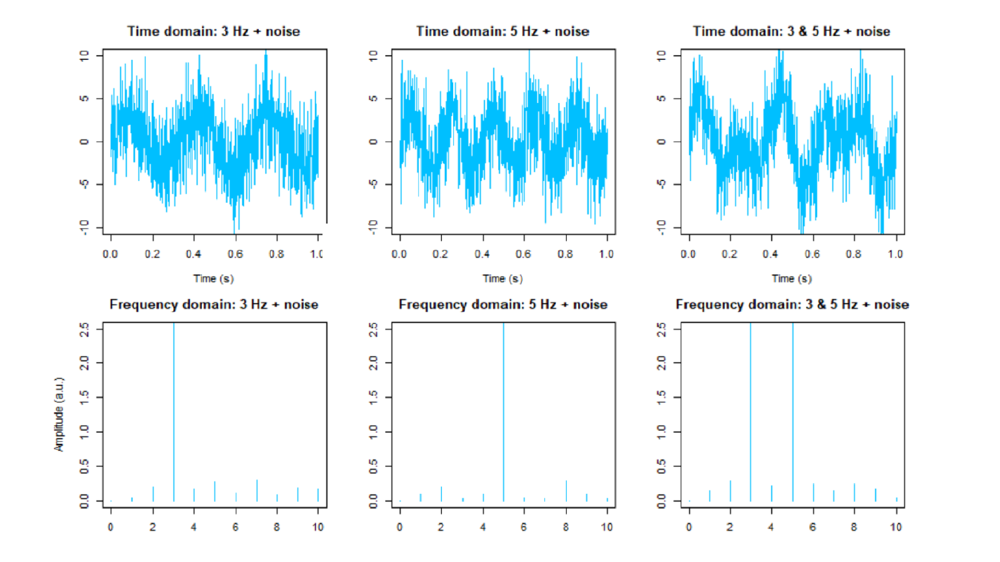
เมื่อเติม noise จนตาแทบมองไม่เห็นคลื่นใน time domain แท่งที่ 3 และ 5 Hz ยังสูงกว่าแท่งอื่นชัดเจน noise กระจายพลังงานไปทุกความถี่เท่า ๆ กันจึงเป็นแท่งเตี้ย ๆ ทั่วแกน นี่คือเหตุผลที่ periodogram หาคาบได้ดีกว่าการดูกราฟด้วยตา
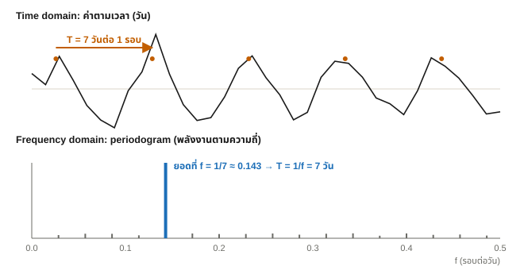
รูปบนคืออนุกรมรายวันที่ยอดซ้ำทุก 7 วัน รูปล่างคือ periodogram ของมัน ยอดเดียวที่ f = 1/7 ≈ 0.143 อ่านกลับเป็นคาบด้วย T = 1/f = 7 วัน ทุกโจทย์ periodogram ทำแค่สองขั้นนี้: หายอด แล้วกลับเศษเป็นส่วน
สไลด์หน้า 9 บอกว่า อนุกรมเวลาใด ๆ เขียนเป็นผลรวมของ sine และ cosine ที่ความถี่ต่างกันได้ เรียกว่า Fourier representation และเปลี่ยนคำถาม จาก "เกิดอะไรขึ้นตามเวลา" เป็น "อะไรเกิดบ่อยแค่ไหน" Prophet ใช้ Fourier series ตัวเดียวกันนี้สร้าง seasonal (ตอน 3)7
DFT เอาข้อมูลไปคูณกับคลื่น cos และ sin ที่ความถี่ k/n แล้วบวกกัน ถ้าข้อมูลแกว่งตรงจังหวะกับคลื่นนั้น ผลรวมจะใหญ่ ถ้าไม่ตรงจังหวะ บวกกับลบจะหักล้างกันจนเล็ก สูตร Euler ใช้แค่เพื่อเขียน cos กับ sin รวมเป็นตัวเดียว FFT คือวิธีคำนวณ DFT ให้เร็ว ไม่อยู่ในเนื้อหาที่ต้องคำนวณเอง8
periodogram คือขนาดยกกำลังสองของ DFT หารด้วย n แสดงว่าแต่ละความถี่มีพลังงาน (ความแปรปรวน) อยู่เท่าไร และ ประมาณ power spectrum ซึ่งแปรผันตาม amplitude ยกกำลังสอง
| คำ | คืออะไร |
|---|---|
| Amplitude | ความแรงดิบของการแกว่ง |
| Power spectrum | พลังงานต่อความถี่ ∝ amplitude² (ค่าของประชากร) |
| Periodogram | ค่าประมาณพลังงานต่อความถี่จากตัวอย่าง ไม่ได้ประมาณ amplitude โดยตรง |
| Spectral density | \(\lambda(\omega)=\sum_h\gamma_h e^{-2\pi i\omega h}\) คือ Fourier transform ของ autocovariance |
บรรทัดสุดท้ายของตารางเชื่อมกับ Lesson 3: spectral density สร้างจาก \(\gamma_h\) ตัวเดียวกับที่ใช้ทำ ACF periodogram กับ correlogram จึงมีข้อมูลชุดเดียวกัน ACF ที่เป็นคลื่นซ้ำทุก 12 lag จะเป็นยอดที่ f = 1/12 ใน periodogram ถ้าโจทย์ให้แท่งสูงสองแท่ง แท่งที่ 3 Hz กับ 6 Hz ตอบเป็นความถี่ ไม่ต้องคำนวณคาบ แต่ถ้าถามว่า "ซ้ำทุกกี่วัน" ต้องกลับเป็น 1/f
T = 1/0.25 = 4 ไตรมาส คือรอบรายปี ตั้ง ts(x, frequency = 4) แล้วใช้ SARIMA ที่ s = 4
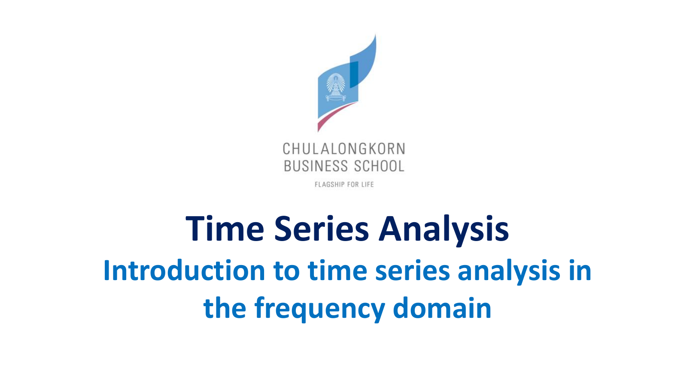
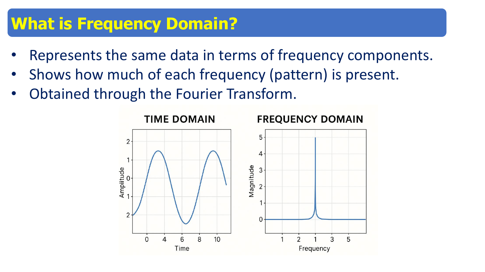
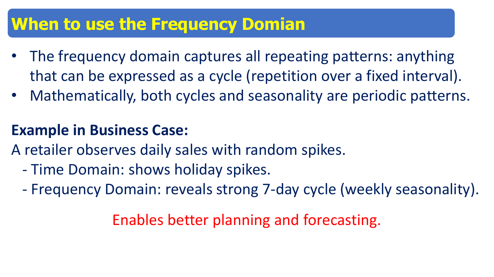
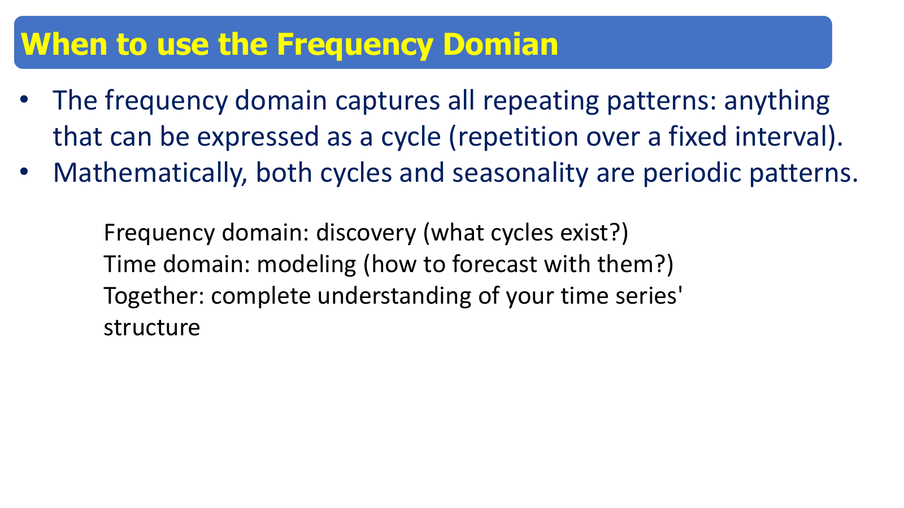
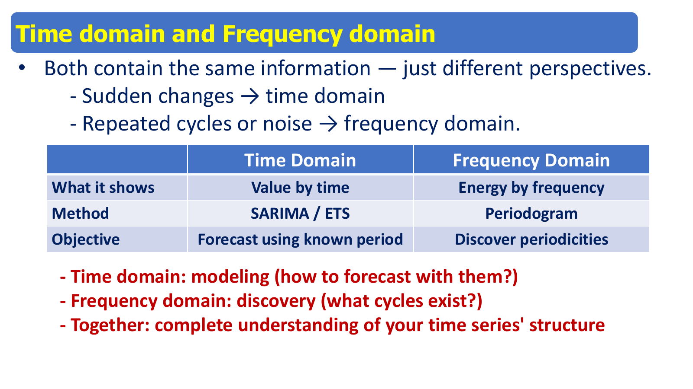
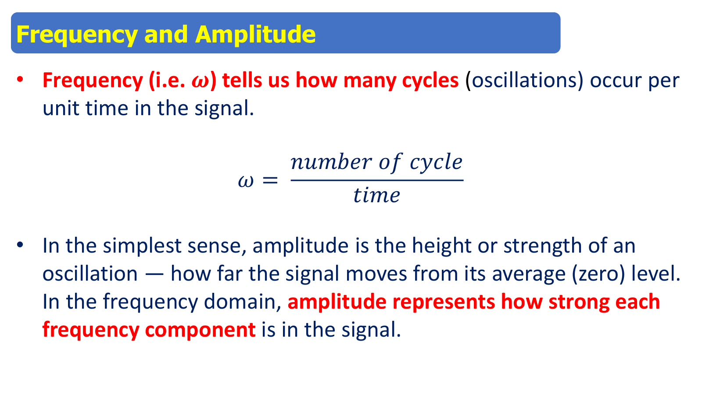
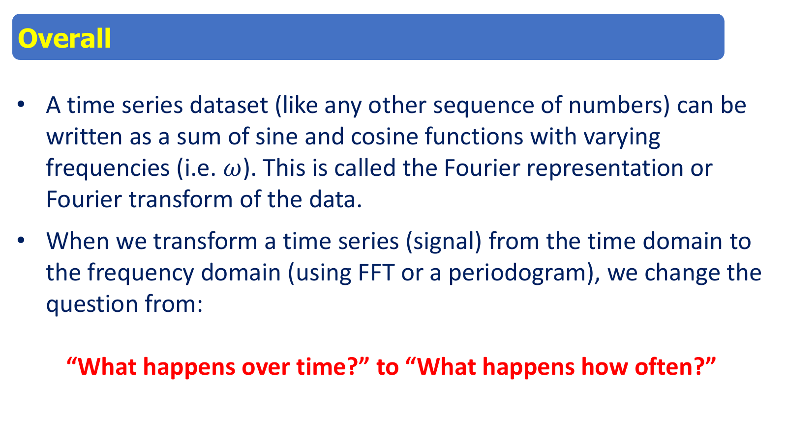
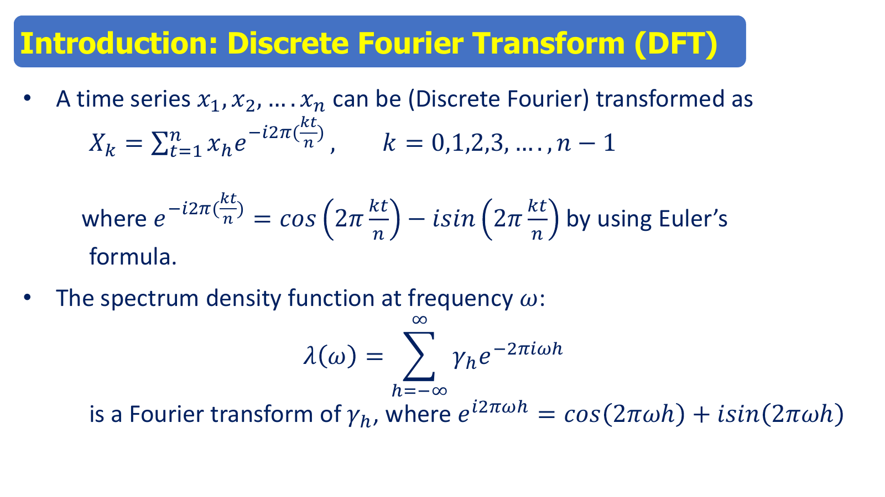
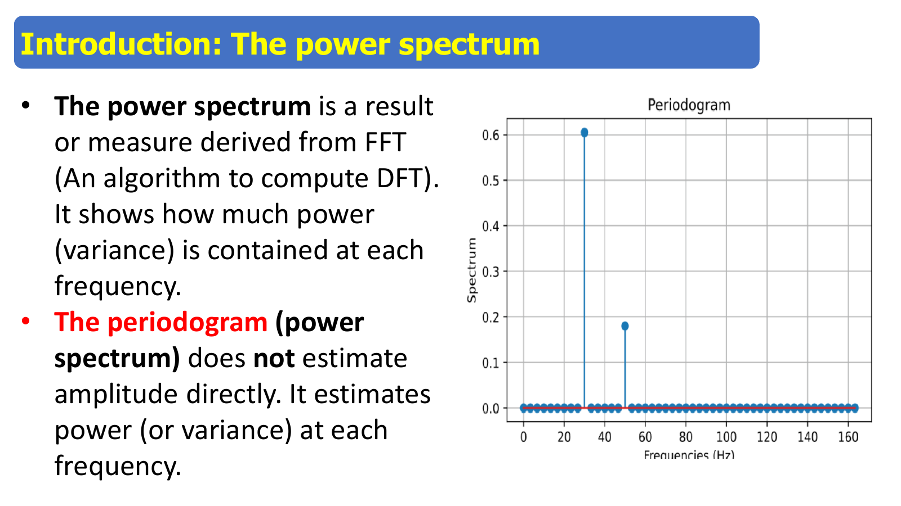
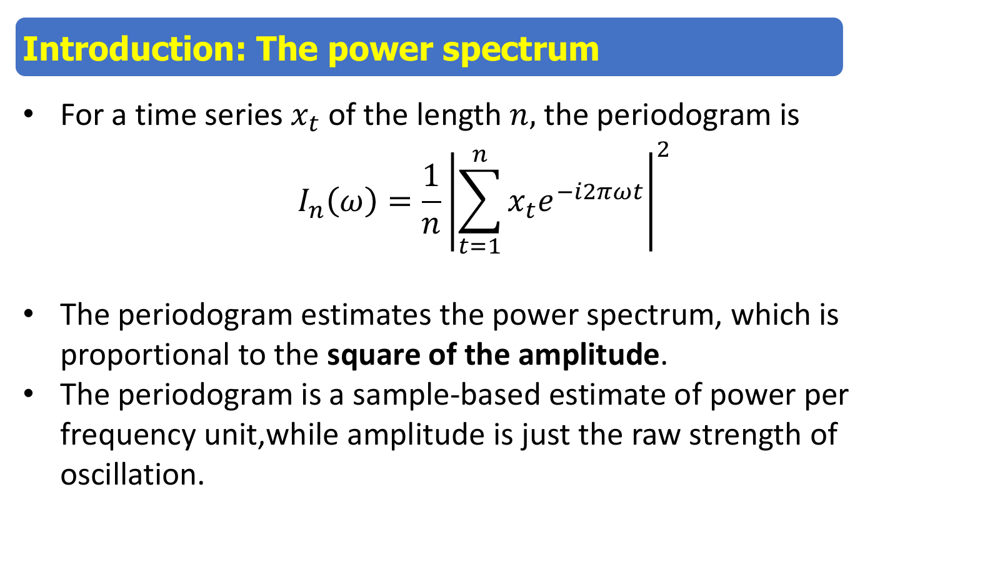
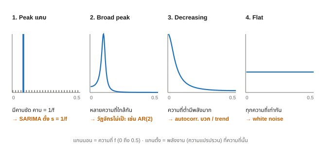
สี่รูปนี้คือ "ตาราง ACF/PACF" ของ frequency domain ดูแค่ว่ายอดแคบหรือกว้าง และพลังงานเทไปทางความถี่ต่ำหรือเท่ากันทุกความถี่ แล้วอ่านความหมายจากบรรทัดสีส้ม
| รูป | สไลด์หน้า 13 ว่า | ทำอะไรต่อ |
|---|---|---|
| Peak แคบ | ยอดสูงและแคบ แปลว่ามีส่วนที่เป็นคาบแรงและสม่ำเสมอที่ความถี่นั้น | T = 1/f แล้วตั้ง s ใน SARIMA |
| Broad peak | หลายความถี่ในช่วงหนึ่งมีส่วนต่อความแปรปรวน ไม่ใช่ความถี่เดียว | รอบไม่คงที่ (cycle) เช่น AR(2) ที่รากเป็นจำนวนเชิงซ้อน (Lesson 6) |
| Decreasing | ความถี่ต่ำ (การเปลี่ยนแปลงระยะยาว) มีพลังมากกว่าความถี่สูง มักแปลว่ามี autocorrelation บวก ค่ามักค้างสูงหรือต่ำเป็นเวลานาน | AR ที่ φ > 0 หรือมี trend ถ้ายอดชิด f = 0 มาก ให้ difference |
| Flat | แบนทุกความถี่ แปลว่าใกล้ white noise ไม่มีรูปแบบคาบที่พยากรณ์ได้ | ไม่มีอะไรให้โมเดล เหมือน ACF ที่ไม่ทะลุเส้น |
Decreasing แปลว่าความถี่ต่ำมีพลังมาก ความถี่ต่ำคือคาบยาว9 trend คือคาบที่ยาวไม่สิ้นสุด (f → 0) พลังงานของ trend จึงกองที่ f ใกล้ศูนย์และกลบยอดของฤดูกาล โค้ดของ traffic จึง difference ก่อนทำ periodogram
ตัวอย่างนี้มีไว้ให้เห็นว่า periodogram ให้คำตอบเป็นตัวเลขเดียวที่ส่งต่อไปตั้ง frequency ของ ts() และ s ของ SARIMA ได้ทันที
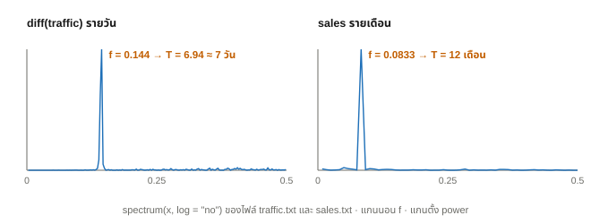
traffic.txt คือจำนวนผู้เข้าเว็บรายวัน (คอมเมนต์ในโค้ดเขียน 375 วัน แต่ไฟล์มี 365 แถว) หลัง diff() ยอดเด่นอยู่ที่ f = 0.144 คาบ 1/0.144 = 6.94 ≈ 7 วัน ไม่ได้ 7 พอดีเพราะ R คำนวณ periodogram ที่ความถี่เป็นขั้น 1/n เท่านั้น10 sales.txt คือยอดขายรายเดือน 120 เดือน ยอดเด่นที่ 0.0833 คือ 12 เดือนพอดี และสูงกว่ายอดถัดไปราว 46 เท่า
เมื่อรู้คาบแล้ว time domain (โดยเฉพาะ ARIMA ที่มีพจน์ฤดูกาล) เหมาะกว่าเมื่อรู้คาบแล้ว sales จึงตั้ง ts(data, frequency = 12) แล้วใช้ auto.arima ของ Lesson 10 ได้ ARIMA(0,0,0)(0,1,2)[12] with drift (sma1 = −1.049, sma2 = 0.177, drift = 0.491)11 ส่วน frequency domain เหมาะที่สุดเมื่อไม่รู้ความยาวรอบ เพื่อค้นหาคาบที่ซ่อนอยู่
อ่าน ARIMA(0,0,0)(0,1,2)[12] ตาม Lesson 9: d = 0 ไม่ difference ปกติ D = 1 difference ฤดูกาลหนึ่งครั้ง (x_t − x_{t−12}) และ Q = 2 คือ seasonal MA สองพจน์ที่ lag 12 กับ 24 ไม่ใช่ MA ที่ lag 1 กับ 2 sma1 ใกล้ −1 มักบอกว่า seasonal difference มากเกินไปเล็กน้อย แต่ auto.arima เลือกแบบนี้ด้วย AICc
ยอดที่ f ≈ 0 คือ trend (คาบยาวมาก ~333 วัน หรือแค่ทิศทางขาขึ้น) กลบอยู่ ควร difference แล้วทำ periodogram ใหม่ ยอดที่ 0.143 คือรอบ 7 วันซึ่งน่าจะชัดขึ้นหลัง difference
data <- ts(read.table("traffic.txt", h = T))
data <- diff(data) # เอา trend ออกก่อน
spectrum(data, log = "no") # log = "no" ให้ยอดเห็นชัด
spec <- spectrum(data, log = "no", plot = FALSE)
dominant_freq <- spec$freq[which.max(spec$spec)] # 0.144
1 / dominant_freq # 6.94 ≈ 7 วัน
sales <- ts(read.table("sales.txt", h = T))
spec <- spectrum(sales, log = "no") # ยอดที่ 0.0833 → 12 เดือน
sales <- ts(sales, frequency = 12) # ส่งต่อให้ time domain
fit <- auto.arima(sales, seasonal = TRUE, stepwise = TRUE, approximation = FALSE)
summary(fit); forecast(fit, h = 24) # ARIMA(0,0,0)(0,1,2)[12] with drift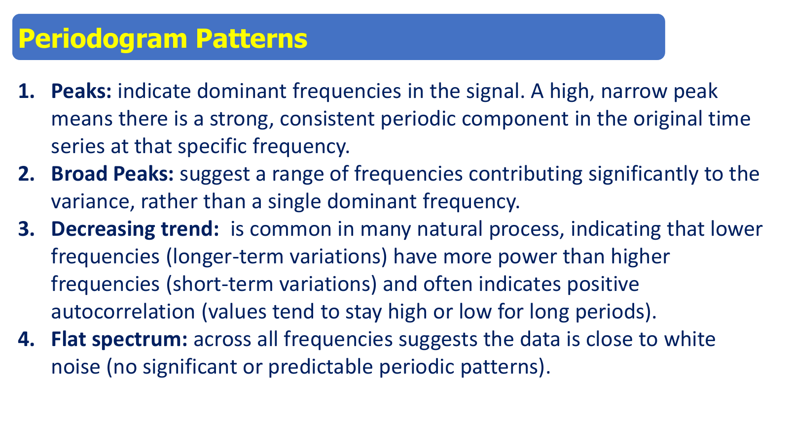
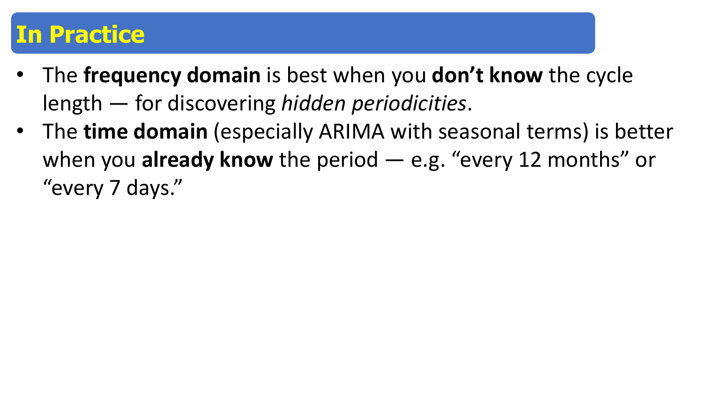
Prophet ไม่ได้ถามว่า "ค่าเมื่อวานบอกอะไรเกี่ยวกับวันนี้" แบบ ARIMA แต่ถามว่า "วันนี้คือวันอะไรของปี วันอะไรของสัปดาห์ ใกล้วันหยุดไหม" แล้วเอาคำตอบมาบวกกัน เหมือนการฟิตเส้นโค้งผ่านปฏิทิน
Prophet เป็น decomposition ขั้นสูง ที่ พยากรณ์อนุกรมตัวเดียวโดยแยกเป็นชิ้น ๆ คล้าย exponential smoothing (Lesson 4) Facebook เสนอในปี 2018 เดิมสำหรับข้อมูลรายวันที่มีฤดูกาลรายสัปดาห์และรายปี บวกผลของวันหยุด12 และ ทำงานดีที่สุดกับอนุกรมที่มีฤดูกาลแรงและมีข้อมูลย้อนหลังหลายฤดูกาล
ค่าที่เห็น = trend + ฤดูกาล + ผลของวันหยุด + ผลของตัวแปรภายนอก + error ทุกส่วนเป็นฟังก์ชันของวันที่ ไม่มี lag ของ y เลย จึงเป็น curve fitting ไม่ใช่ autoregression13
| ส่วน | สร้างอย่างไร | เทียบกับบทก่อน |
|---|---|---|
| \(c_t\) trend | เส้นตรงเป็นท่อน (piecewise) หักได้ที่ changepoint | trend ใน decomposition (Lesson 3–4) |
| \(s_t\) ฤดูกาล | Fourier series (ผลรวม sin/cos) รายปี รายสัปดาห์ รายวัน | คลื่นใน frequency domain (ตอน 1) |
| \(h_t\) ผลของวันหยุด (หรือเหตุการณ์) | dummy ของวันหยุดพร้อมหน้าต่างก่อน/หลัง | ARIMA ต้องสร้าง dummy เองทุกวัน |
| \(x_t\) ตัวแปรภายนอก | add_regressor() | xreg ของ ARIMAX (Lesson 11) |
เพราะ Prophet ไม่ใช้ lag ของ y มันจึง ไม่เก่งเรื่องความเคลื่อนไหวระยะสั้น ถ้าวันนี้ยอดตกฮวบ พรุ่งนี้ Prophet ก็ยังพยากรณ์ตามปฏิทินเหมือนเดิม ขณะที่ AR จะดึงค่าพยากรณ์ลงตาม
วันหยุดอย่าง Easter หรือสงกรานต์ไม่ได้ตรงกับคาบที่แน่นอน ฤดูกาลแบบ s = 365 จึงจับไม่ได้ ตัวอย่างบนสไลด์คือช็อกโกแลตวันวาเลนไทน์: Prophet ต้องระบุ 14 ก.พ. เป็นวันสำคัญ และระบุว่าก่อนและหลังกี่วัน ส่วนโมเดลอื่น ต้องสร้าง dummy แยกทุกวัน ถ้าเชื่อว่าแต่ละวันมีผลต่างกัน คนส่วนใหญ่ซื้อก่อนวันที่ 14 บางคนซื้อหลัง จำนวนวันก่อนและหลังตั้งเองจากความรู้ทางธุรกิจ14
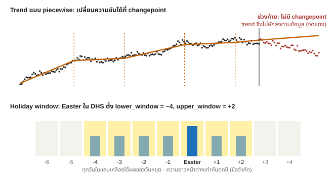
รูปบน: เส้นส้มคือ trend ของ Prophet ที่หักได้ที่เส้นประ (changepoint) แต่ไม่มี changepoint ในช่วงท้ายของข้อมูล ถ้าข้อมูลเพิ่งหักหัวลง trend จะยังชี้ขึ้นต่อ ซึ่งคือสิ่งที่เกิดกับ DHS ในตอน 4 รูปล่าง: Easter ใน DHS ตั้งหน้าต่างตั้งแต่ 4 วันก่อนถึง 2 วันหลัง ทุกวันในแถบเหลืองได้ผลของวันหยุด
หน้าต่างต้องยาวเท่ากันทุกปี Easter ทุกปีได้ −4 ถึง +2 เหมือนกันหมด อาจารย์เรียกว่าข้อจำกัดเพราะยืดหยุ่นไม่ได้15
| argument | ความหมาย (สไลด์หน้า 23) |
|---|---|
holidays | data frame ของวันหยุดที่เตรียมไว้แล้ว |
yearly/weekly/daily.seasonality | TRUE หรือ FALSE ข้อมูลรายวันเปิด weekly ข้อมูลรายชั่วโมงเปิด daily16 |
seasonality.mode | multiplicative หรือ additive เหมือน Holt-Winters (Lesson 4) |
seasonality.prior.scale | ความแรงของฤดูกาล (ยิ่งสูงยิ่งแรง) |
holidays.prior.scale | ค่ามากยอมให้ผลของวันหยุดใหญ่ขึ้น |
changepoint.prior.scale | trend เปลี่ยนง่ายแค่ไหน |
| ข้อดี (หน้า 24) | ข้อเสีย |
|---|---|
| ยืดหยุ่น | เขียนโปรแกรมซับซ้อน |
| รองรับเหตุการณ์ที่เลื่อนวันได้ | อาจต้องปรับจูนหนัก |
| ใช้กับ regressor ได้ดี | ไม่เก่งเรื่องความเคลื่อนไหวระยะสั้น |
daily.seasonality = TRUE (รอบ 24 ชั่วโมงในหนึ่งวัน) และ weekly ถ้ามีข้อมูลหลายสัปดาห์ ข้อมูลรายวันจะไม่มีรอบภายในวัน จึงปิด daily
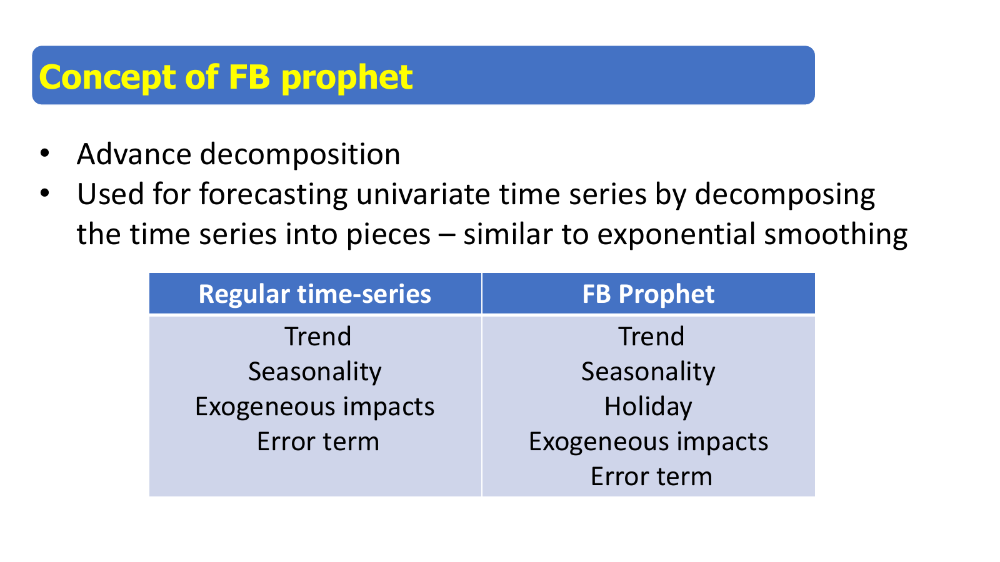
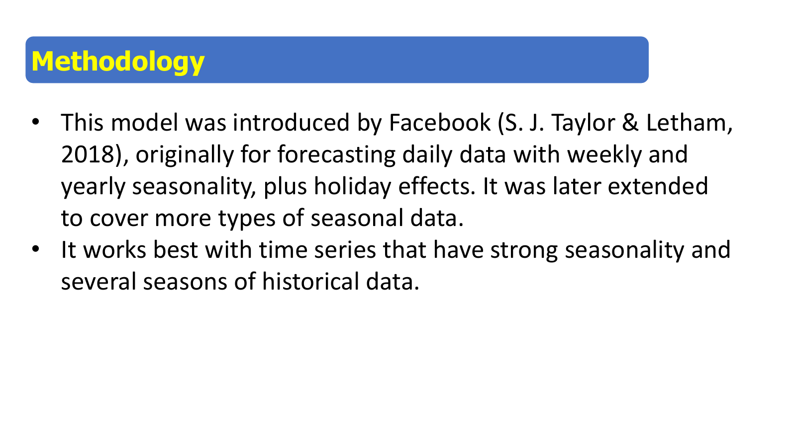
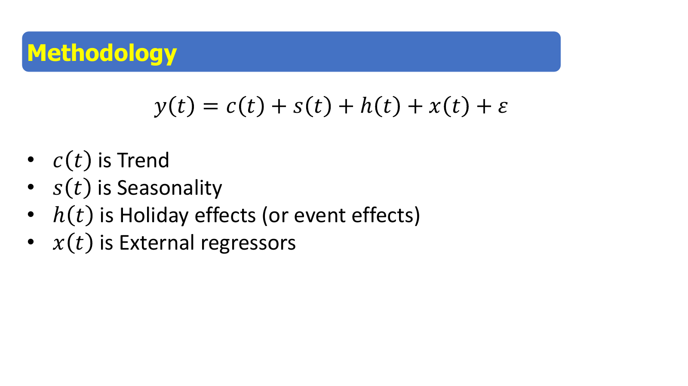
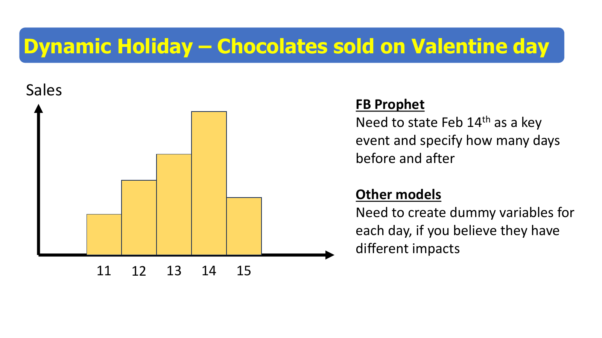
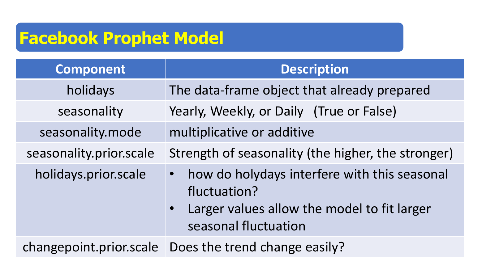
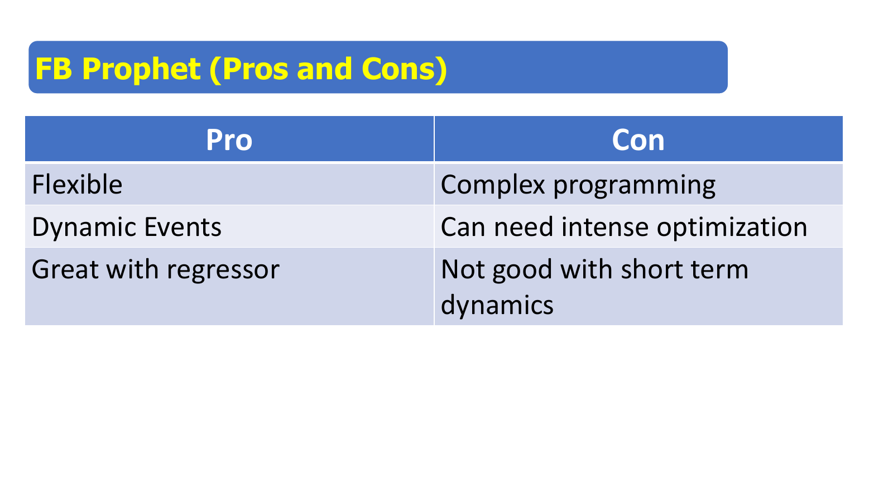
ตัวอย่างนี้มีไว้ให้เห็นว่า Prophet ต้องการแค่สองคอลัมน์ชื่อ ds กับ y และ predict ให้ค่าทั้งย้อนหลังและอนาคตในตารางเดียว
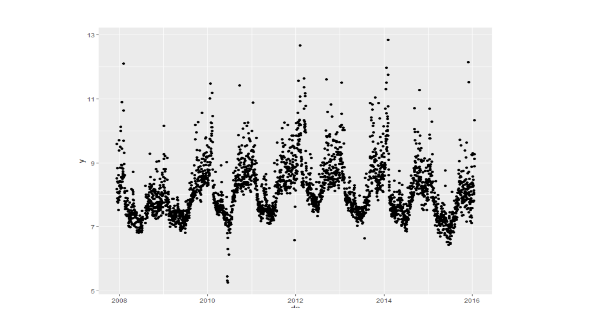
data1.csv เป็นข้อมูลรายวัน 2,905 วัน กราฟมีรูปแบบรายปีชัดและมีค่ากระโดดเป็นช่วง ๆ คอลัมน์ต้องชื่อ ds (date stamp) และ y และวันที่ต้องอยู่ในรูป ปี-เดือน-วัน จึงแปลงด้วย strptime(..., "%m/%d/%Y") แล้ว as.Date17
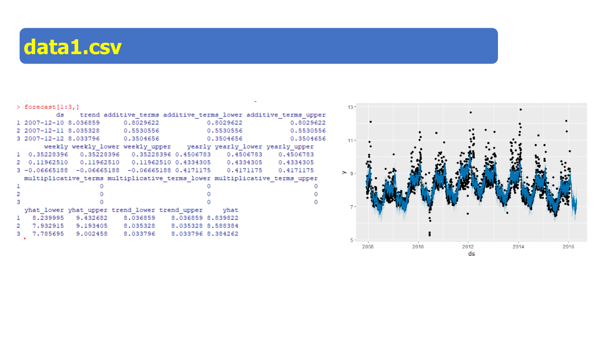
make_future_dataframe(m, periods = 100) สร้างตารางวันที่ 2,905 + 100 = 3,005 วัน แล้ว predict คืนค่าทุกส่วนประกอบของทุกวัน คอลัมน์ที่ใช้คือ yhat (ค่าพยากรณ์) กับ yhat_lower, yhat_upper ส่วน trend, weekly, yearly คือแต่ละชิ้นของสมการในตอน 3.1 จุดดำในกราฟคือข้อมูลจริง เส้นฟ้าคือ yhat ที่ฟิตทั้งย้อนหลังและต่อไปอีก 100 วัน
ตัวอย่างนี้มีไว้ให้เห็นว่า โมเดลที่ฟิตข้อมูลเก่าได้แนบมาก ยังพยากรณ์ผิดทิศได้ถ้า trend เพิ่งเปลี่ยนตอนท้าย
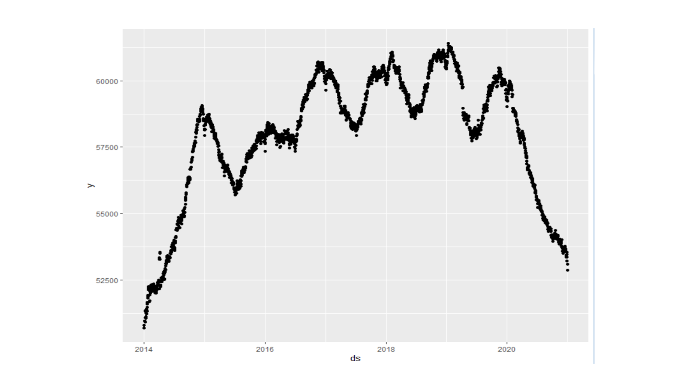
DHS.csv คือจำนวนคนในศูนย์พักพิงคนไร้บ้านของนิวยอร์กรายวัน 7 ปี (y = Total Individuals in Shelter) จำนวนขึ้นช่วงแรก แกว่งเป็นรอบรายปี แล้วดิ่งลงในปี 2020 วันหยุด Easter และ Thanksgiving มีผลกับวันรอบข้าง ตั้งหน้าต่าง Easter −4/+2 และ Thanksgiving −3/+1 แล้วรวมด้วย bind_rows ตัวแปรภายนอกคือ Christmas และอุณหภูมิ ใส่ด้วย add_regressor test set คือธันวาคม 2020 31 วัน18
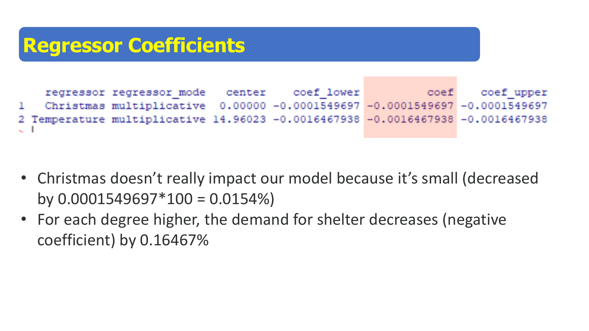
โมเดลตั้ง seasonality.mode = 'multiplicative' ค่าสัมประสิทธิ์จึงอ่านเป็นสัดส่วน คูณ 100 เป็นเปอร์เซ็นต์: อุณหภูมิสูงขึ้นทุก 1 องศา ความต้องการที่พักลดลง 0.16467% ส่วน Christmas แทบไม่มีผลเพราะค่าเล็ก (ลดลง 0.0154%) ผลของ Easter ที่ดึงจาก forecast$easter ติดลบ แปลว่าช่วง Easter มีคนน้อยกว่าระดับปกติ19
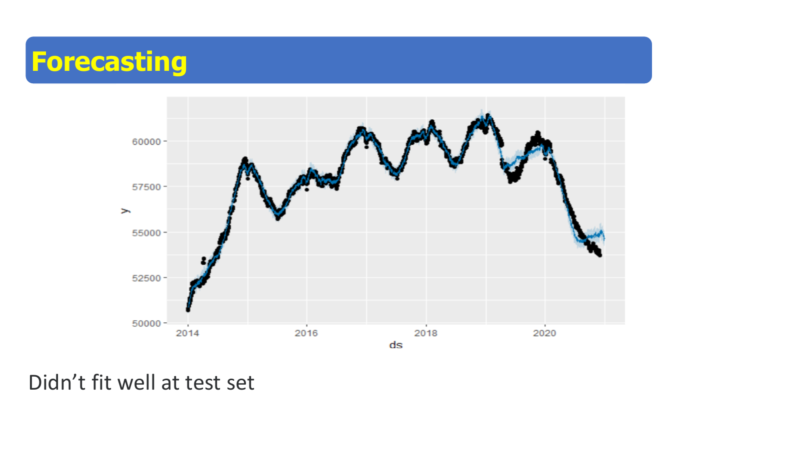
สไลด์สรุปว่า ฟิตไม่ดีใน test set เส้นฟ้าทับจุดดำแนบตลอด 2014–2019 แต่ช่วงปลาย 2020 ข้อมูลยังลงต่อ ขณะที่ค่าพยากรณ์ทรงตัวสูงกว่า
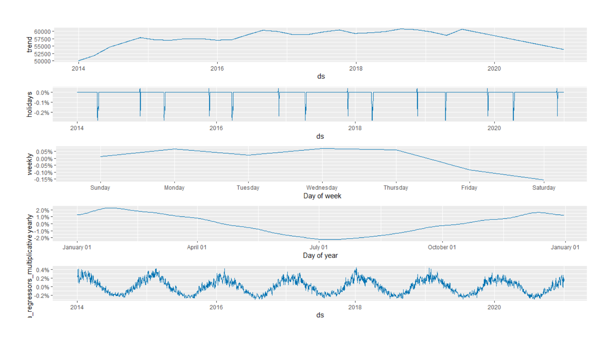
กราฟส่วนประกอบแยกสมการ \(c_t+s_t+h_t+x_t\) ออกมาทีละแถว: holidays เป็นหนามลงสั้น ๆ ปีละสองครั้ง (Easter, Thanksgiving) weekly ต่ำสุดวันเสาร์ แต่ขนาดไม่ถึง 0.2% yearly แกว่งราว ±2% ซึ่งใหญ่กว่า weekly มาก และ regressor ที่ขึ้นลงเป็นรอบรายปีตามอุณหภูมิ
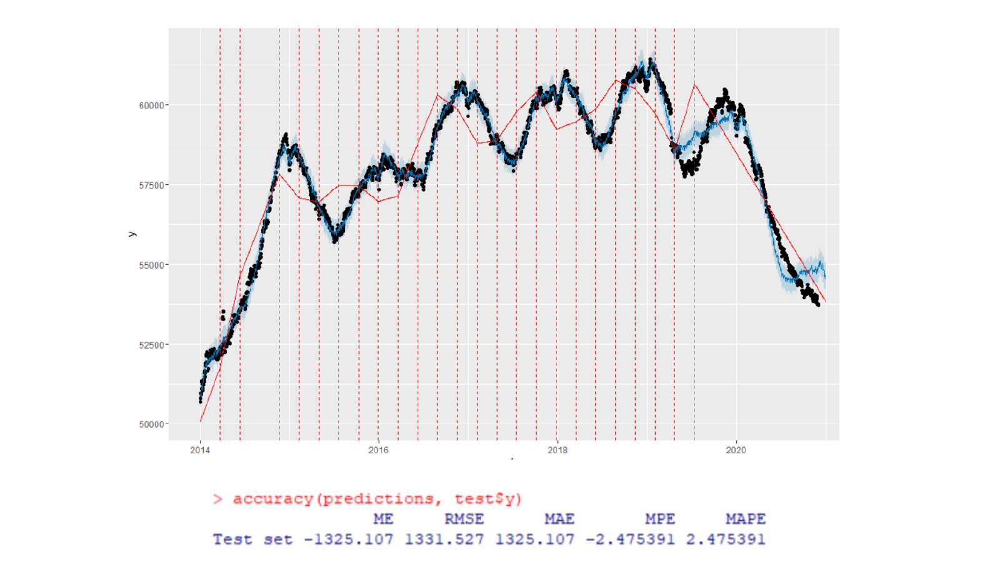
add_changepoints_to_plot แสดง trend เป็นเส้นตรงหลายท่อน (piecewise regression) ที่หักที่เส้นประ20 เส้นประหยุดก่อนช่วงท้ายของข้อมูล เพราะ Prophet วาง changepoint แค่ใน 80% แรกของ training set การดิ่งลงปี 2020 จึงไม่ถูกจับเป็น trend ใหม่ accuracy(tail(forecast$yhat, 31), test$y) ให้ RMSE = 1,331.5 และ ME = −1,325.121
ME กับ RMSE ขนาดเกือบเท่ากัน แปลว่า error เกือบทุกวันขนาดเท่ากันและไปทางเดียวกัน (ไม่ได้บางวันบวกบางวันลบ) และ ME ติดลบเพราะ forecast::accuracy นิยาม error = ค่าจริง − ค่าพยากรณ์ (Lesson 2) ค่าพยากรณ์จึงสูงเกินจริงราว 1,325 คนทุกวัน MAPE = 2.48% ดูเล็ก แต่เป็น bias ล้วน ๆ ตรงกับภาพของ changepoint ที่หายไปช่วงท้าย
regressor เป็นส่วน x_t ของสมการ predict ต้องรู้ค่าของมันทุกวันที่จะพยากรณ์ เหมือน xreg ของ ARIMAX (Lesson 11) และ NNAR (Lesson 12) โค้ดจึงใช้ future[,2:3] = data %>% select(Christmas, Temperature)
library(prophet); library(dplyr); library(forecast)
data <- read.csv("DHS.csv")
data$Date <- as.Date(strptime(data$Date, format = "%m/%d/%Y")) # ปี-เดือน-วัน
data <- data %>% select(Date, Total.Individuals.in.Shelter, Easter, Thanksgiving, Christmas, Temperature)
colnames(data)[1:2] <- c("ds", "y") # ชื่อบังคับ
easter <- tibble(holiday = "easter", ds = data$ds[data$Easter == 1],
lower_window = -4, upper_window = 2) # 4 วันก่อน 2 วันหลัง
thanksgiving <- tibble(holiday = "thanksgiving", ds = data$ds[data$Thanksgiving == 1],
lower_window = -3, upper_window = 1)
holidays <- bind_rows(easter, thanksgiving)
training <- data %>% filter(ds < "2020-12-01") %>% select(ds, y, Christmas, Temperature)
test <- data %>% filter(ds >= "2020-12-01") %>% select(ds, y, Christmas, Temperature)
m <- prophet(holidays = holidays, yearly.seasonality = TRUE, weekly.seasonality = TRUE,
daily.seasonality = FALSE, seasonality.mode = "multiplicative")
m <- add_regressor(m, "Christmas"); m <- add_regressor(m, "Temperature")
m <- fit.prophet(m, training) # add_regressor ต้องมาก่อน fit
future <- make_future_dataframe(m, periods = nrow(test))
future[, 2:3] <- data %>% select(Christmas, Temperature) # regressor ของอนาคต
forecast <- predict(m, future)
prophet_plot_components(m, forecast)
plot(m, forecast) + add_changepoints_to_plot(m)
accuracy(tail(forecast$yhat, nrow(test)), test$y) # ME −1325, RMSE 1332ใช้ prophet() เปล่า ๆ ก่อน แล้วค่อย add_regressor และ fit.prophet เพราะถ้าส่งข้อมูลเข้า prophet(data) ตรง ๆ โมเดลจะฟิตทันทีโดยยังไม่มี regressor
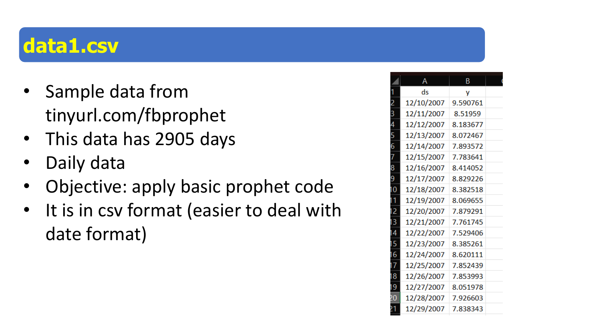
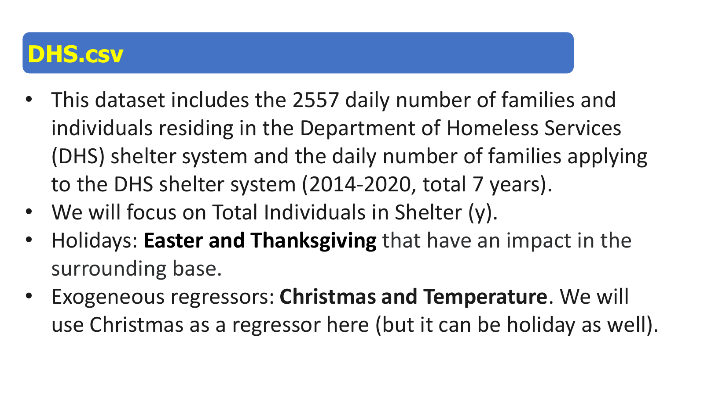
FINAL 2025 ข้อ 3 ให้คำอธิบายข้อมูลหกชุดแล้วให้เลือกระหว่าง SARIMA, ARIMAX, VAR, GARCH และ FB Prophet อาจารย์ไม่ได้ให้เฉลย แต่แต่ละโมเดลมี "สัญญาณ" ที่ชี้ชัดจากบทที่เรียนมา:
| สัญญาณในโจทย์ | โมเดล | บท |
|---|---|---|
| อนุกรมเดียว มีฤดูกาลคาบคงที่ (รายเดือน s = 12) อาจมี trend | SARIMA | Lesson 9–10 |
| มีตัวแปร X ที่ส่งผลต่อ Y ทางเดียว และรู้ค่า X ล่วงหน้า (งบโฆษณา) | ARIMAX | Lesson 11 |
| หลายตัวแปรส่งผลต่อกันไปมา ต้องพยากรณ์ทุกตัว (GDP สองประเทศ) | VAR | Lesson 11 |
| return ของหุ้น ผันผวนเป็นกลุ่ม ACF ของ return² ลดช้า | GARCH | Lesson 12 |
| ข้อมูลรายวัน ฤดูกาลรายสัปดาห์/รายปี วันหยุดเลื่อนได้ trend หักได้ | Prophet | Lesson 13 |
| ไม่รู้ว่ามีคาบเท่าไร | periodogram ก่อน แล้วค่อยเลือกจากแถวบน | Lesson 13 |
| ชุดข้อมูลใน FINAL 2025 | ตอบ | เหตุผล |
|---|---|---|
| ยอดสั่งซื้อรายวัน 5 ปี trend ขึ้น ศุกร์–เสาร์สูง ปีใหม่และสงกรานต์สูง | Prophet | รายวัน + weekly + วันหยุดที่ต้องตั้งหน้าต่าง |
| ราคาหุ้นเทคโนโลยีรายวัน ผันผวนเป็นช่วง ACF ของ squared return ลดช้า | GARCH | volatility clustering |
| ยอดขายรายสัปดาห์ ตอบสนองต่องบ Facebook Ads ชัดเจน | ARIMAX | Ads เป็น X ที่บริษัทกำหนดเอง |
| นักท่องเที่ยวรายเดือน 10 ปี ธ.ค.–ม.ค. สูง trend ขึ้น โควิดตกแรง | Prophet (หรือ SARIMA + dummy โควิด) | สิ่งที่ต่างจากชุดกาแฟคือ trend ที่หักแรง Prophet รองรับด้วย changepoint |
| GDP ไทยและสหรัฐรายไตรมาส ต้องการดูผลกระทบและการตอบสนองร่วมกัน | VAR | ส่งผลต่อกันสองทาง |
| ยอดขายกาแฟรายเดือน 6 ปี ปลายปีสูง เม.ย.–พ.ค. ต่ำทุกปี | SARIMA | ฤดูกาลรายเดือนคงที่ ไม่มีอะไรเพิ่ม |
ชุดนักท่องเที่ยวเป็นข้อที่เถียงได้ เขียนเหตุผลกำกับเสมอเมื่อเป็นข้อเขียน คำที่ใช้ตัดสินคือ "ข้อมูลอะไรที่มีเพิ่ม": มี X ที่รู้ล่วงหน้าเป็น ARIMAX, X ที่ต้องพยากรณ์ด้วยเป็น VAR, ความแปรปรวนเป็นกลุ่มเป็น GARCH, รายวันกับวันหยุดเป็น Prophet ถ้าไม่มีอะไรเพิ่มเลยเป็น SARIMA
ไฟล์ R_codes.txt, traffic.txt, sales.txt, data1.csv และ DHS.csv อยู่ในโฟลเดอร์ CLASS 12 ใช้ package forecast, prophet และ dplyr ลองฝึกต่อในแบบฝึก Lesson 13 (มี FINAL 2025 ข้อ 5 ข้อมูล rain) หรือกลับไปที่สารบัญ
ตัวเลขยกในเนื้อหาชี้มาที่รายการนี้ แต่ละรายการระบุคลาสและนาทีของคลิป พร้อมถ้อยคำในคลิปเมื่อมี
| หน้า | เนื้อหา | อยู่ในตอน |
|---|---|---|
| 1–12 | Frequency domain, ความถี่, amplitude, DFT, power spectrum, periodogram | ตอน 1 |
| 13–14 | รูป periodogram และการใช้งานจริง | ตอน 2 |
| 15–18 | แนวคิดและสมการของ Prophet | ตอน 3 |
| 19–21 | data1.csv | ตอน 4 |
| 22–24 | Dynamic holiday, พารามิเตอร์, ข้อดีข้อเสีย | ตอน 3 |
| 25–30 | DHS: วันหยุด regressor การพยากรณ์ changepoint | ตอน 4 |
แหล่งอื่นที่ใช้: Class 12 ช่วง 0:00–1:42 (ตอน 1–4; ช่วง 0:09:27–0:10:35 และ 0:51:58–0:54:27 เป็นคลิป YouTube ถอดไม่ได้), ไฟล์ R_codes.txt, traffic.txt และ sales.txt (CLASS 12) ที่รันซ้ำ, FINAL (2025) ข้อ 3 (ตอน 5) ค่าของ Prophet ใช้ output บนสไลด์